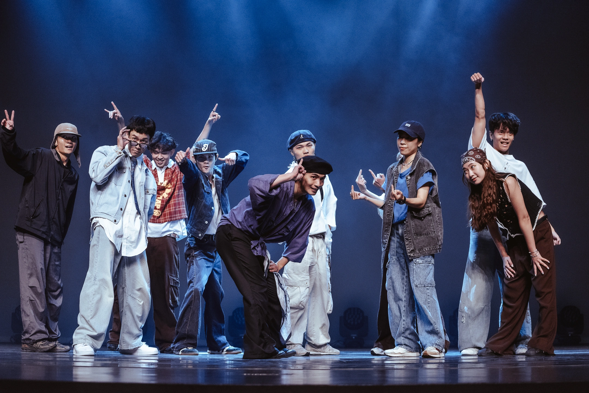

MCUDC
舞動青春．點燃熱血
加入我們，一起創造舞台上的奇蹟。
關於我們
只要對跳舞有興趣，都期待你們的加入。
就算沒有基礎，只要你熱愛街舞這個文化，學長姐都會很親切且耐心的教大家。
在這裡，不管是喜歡表演還是比賽，桃銘熱舞都有屬於你的舞台。
期待你們加入桃銘熱舞這個大家庭！
Locking 組
Locking 是源自 1970 年代美國的街舞風格，屬於 Funk Style 的一種。
誇張的大幅度肢體擺動、快速手勢變換，常伴隨著幽默、戲劇性的表現風格。
25屆期末大型成發《DCity 熱·城》
25屆期末大型成發《DCity 熱·城》
Breaking 組
Breaking（B-boying/B-girling）源於 1970 年紐約布朗克斯，融合力量、速度、創意與技巧。
Breaking 不只是舞蹈，更是一種街頭文化的態度，象徵原創力與不屈不撓的精神。
24屆期末大型成發《Golden Street》
25屆期初迎新舞展《NextONE》
Jazz 組
Jazz 融合芭蕾、現代舞與街舞元素，呈現流暢卻具爆發力的動作。
動作線條講究，擅長以肢體語言講述故事，注重情緒表達與節奏感。
25屆期末大型成發《DCity 熱·城》
25屆期末大型成發《DCity 熱·城》

HipHop 組
HipHop 舞蹈源自街頭文化，講求 Groove（律動感）、節奏與個人風格。
強調自我表達與態度，是讓舞者在節奏中找到個人聲音的最佳平台。
25屆期末大型成發《DCity 熱·城》
25屆期末大型成發《DCity 熱·城》


Popping 組
Popping 發源於 1970 年代加州，舞者透過快速肌肉收縮（pop）與波浪（wave）、幻影（tutting）等技巧，創造出機械般的視覺效果。
此舞風強調肌肉控制與節奏掌握，可展現剛硬帥氣或柔順流暢的多樣風格。
24屆期末大型成發《Golden Street》
25屆期末大型成發《DCity 熱·城》

Waacking 組
Waacking 起源於 1970 年代洛杉磯的同性戀夜店文化，以快速揮動手臂、華麗姿勢（Pose）與強烈節奏感為特色，常搭配 Funk、Disco 音樂，展現自信與戲劇張力。
桃灣的眼睛，銘視｜College High Vol 20 世界大學街舞高峰會

House 組
House 舞蹈源自芝加哥與紐約的地下夜店文化，融合快速腳步（Footwork）、流暢身體律動與自由即興，強調與音樂的互動與舞者的個人風格。
桃淵銘傳桃花源記｜College High Vol.19 世界大學街舞高峰會

我們的日常